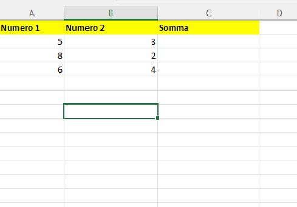
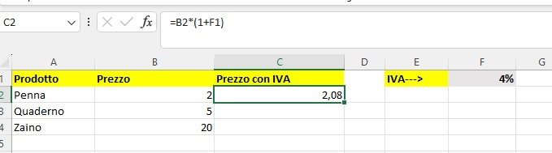
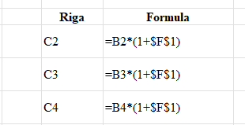

Comprendere la differenza tra Riferimenti Relativi e Assoluti ($)
Imparare come Excel gestisce le coordinate delle celle nelle formule e come queste si aggiornano (o restano bloccate) durante la copia o il trascinamento.
Excel non lavora solo con numeri fissi, ma con la "posizione" delle celle. Quando trasciniamo una formula, Excel sposta i riferimenti seguendo il movimento del mouse.
| A (Numero 1) | B (Numero 2) | C (Somma) | |
| 2 | 10 | 5 | (formula) |
| 3 | 20 | 10 | (da trascinare) |
| 4 | 30 | 15 | (da trascinare) |

Clicca sulla cella C2 e digita:
Usa la maniglia di riempimento (il quadratino verde in basso a destra) e trascina fino alla cella C4. Noterai che:
=A3+B3=A4+B4A volte abbiamo bisogno che un valore nella formula resti fisso, anche se trasciniamo la formula in altre celle. È il caso tipico dell'aliquota IVA, di una percentuale di sconto o di un tasso di cambio.
| A (Prodotto) | B (Prezzo Netto) | C (Prezzo con IVA) | F (Aliquota) | ||
| 2 | Monitor | 100,00 | (formula) | 22% |

Se scrivessimo in C2 =B2*(1+F1) e trascinassimo verso il basso, Excel cercherebbe l'IVA nelle celle F2, F3, ecc., che sono vuote. Il risultato sarebbe un errore o un calcolo sbagliato.
Per "congelare" il riferimento all'IVA, dobbiamo aggiungere il simbolo del dollaro davanti alla colonna e alla riga:
Ora, trascinando la formula verso il basso, otterrai:
=B3 * (1 + $F$1)=B4 * (1 + $F$1)